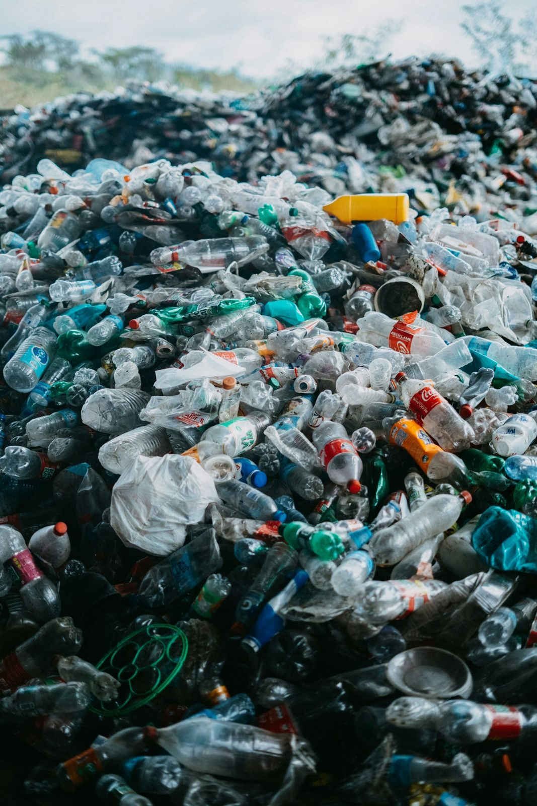
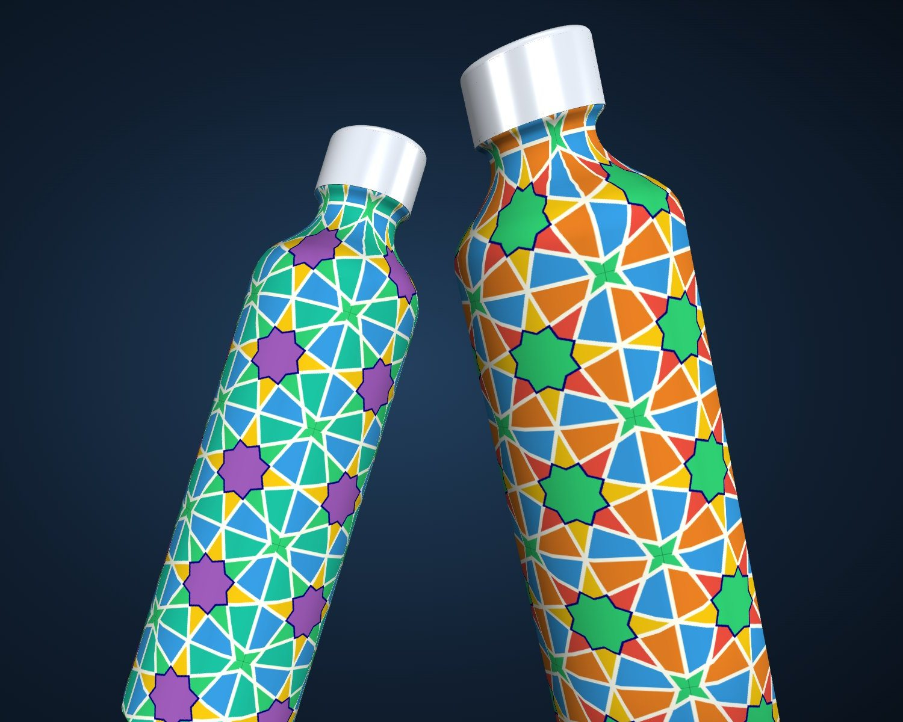
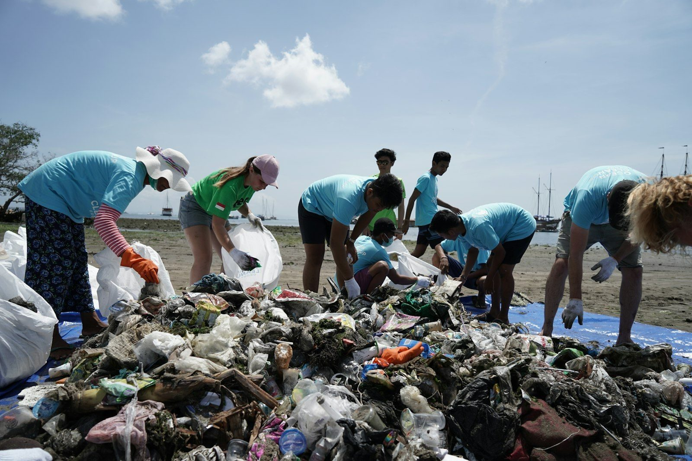

01 · Materials
Designed for circularity
Terra products are made with 67% recycled materials. Every design is modular, repairable and recyclable, built for longevity and a minimal footprint.
Terra is focused on preventing plastic pollution by creating products that drive real environmental change.
Our approach combines innovative design with measurable impact to help protect ecosystems and reduce plastic waste worldwide.
What we’re working towards
One bottle. One action. One hundred plastic bottles kept from the ocean.
Hover or tap the highlighted dots

01 · Materials
Terra products are made with 67% recycled materials. Every design is modular, repairable and recyclable, built for longevity and a minimal footprint.

02 · Tracking
Our refill and reuse tracking platform lets you see the real-time effect of your actions. Every refill contributes to collecting plastic waste from vulnerable regions.
Track your refills
03 · Transparency
Terra is committed to full transparency and traceability. We publish detailed impact reports and hold ourselves to the highest environmental and social standards.
Why Terra
Every year, the average person uses 167 plastic bottles. Most end up polluting our land and oceans. Plastic can take up to 450 years to break down, contaminating soil and water for generations. With plastic production expected to double by 2040, the urgency to reduce and reuse is clear.
The Sustainable Bottle Generator was created to make the invisible impact of plastic use visible and personal. Through interactive design and data visualisation, it shows how small actions, like switching to a reusable bottle, can add up to a big difference.
This isn’t just a tool or a product. It’s a way to build awareness, inspire pride in sustainable choices, and motivate ongoing action. By pairing the Generator with our reusable bottles, you’re making a tangible step toward reducing waste and protecting the planet, one bottle at a time.
Colour reference guide
Each tile in your mosaic is made of six parts. Each part answers one question, and its colour shows your answer.